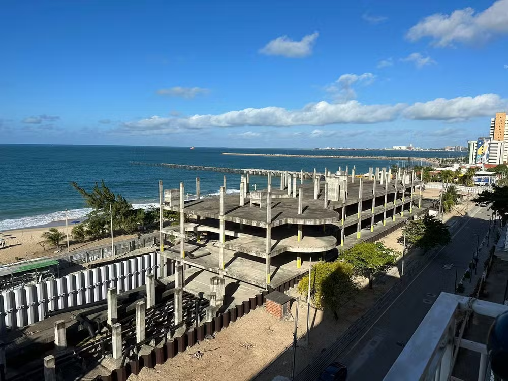

O aqurário que não saiu.
No dia 17 de fevereiro de 2009, o então secretário de Turismo do governo cearense, Bismarck Maia, convocou a imprensa para anunciar aquele que seria o projeto mais ambicioso já tocado pela pasta: a construção do Acquario do Ceará, o maior da América Latina e o terceiro maior do mundo.
A estrutura seria monumental: ocupando um espaço de 21,5 mil metros quadrados, o Acquario seria dividido em subsolo, térreo e dois pisos superiores, com cinemas, túneis de observação submersos, simuladores de submarinos, elevador panorâmico da orla, 25 tanques de animais, esculturas, fontes e até um navio naufragado. A expectativa era abrigar 35 mil animais.
No mesmo ano, no dia 31 de maio, a FIFA anunciou Fortaleza como uma das cidades-sede da Copa do Mundo de 2014. O futuro Acquario, então, seria um dos cartões-postais com que os turistas iriam se surpreender ao visitar a capital cearense. O tempo era corrido, mas o governo bateu o martelo: a obra teria início em 2009, seria concluída em 2010 e estaria aberta ao público em 2011.
Quatorze anos depois e R$ 112 milhões gastos, o Acquario do Ceará é, hoje, um esqueleto de concreto acumulando água de chuva, cercado de tapumes, repousando de frente para o mar em um dos principais pontos turísticos de Fortaleza. As obras estão paradas desde 2017.
Na última sexta-feira de 2023, o governo do Ceará assinou um protocolo de intenção para doar o esqueleto do Acquario para a Universidade Federal do Ceará (UFC), que pretende transformar a área em um novo campus universitário para o Instituto de Ciências do Mar (Labomar).
O novo campus vai contar com um "aquário virtual" e espaço de exposição para visitantes. Conforme a UFC, a expectativa é que o Campus Iracema, como é chamado oficialmente, esteja pronto em 2026. Não há previsão de quando as obras vão começar.
A proposta pretende pôr fim à novela que envolve a construção do Acquario, alvo de disputas judiciais, embargos ambientais e protestos, e dar uma resposta aos moradores da região, que convivem há anos com o esqueleto de concreto.